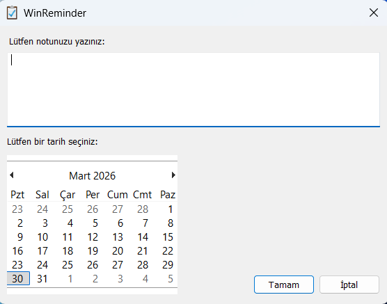
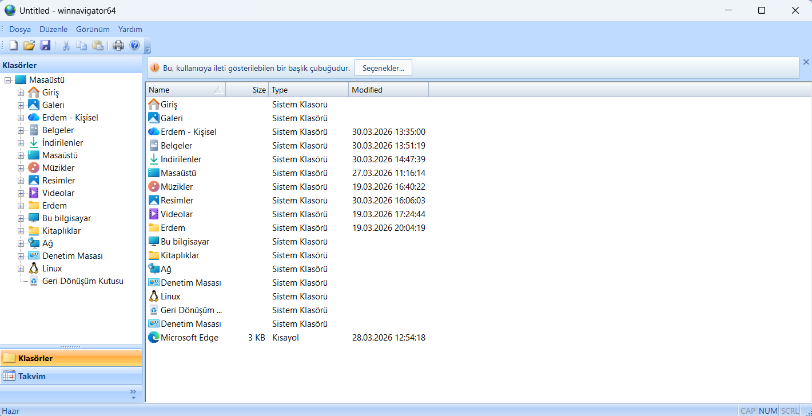

WinReminder, hatırlatma notları tutmanızı ve bunları metin belgesi biçiminde kaydetmenizi sağlayan basit bir programdır.

WinNavigator, sade ve temiz bir kullanıcı deneyimi sunan, takvim içeren ve farklı görsel stiller sunan bir dosya yöneticisidir.
